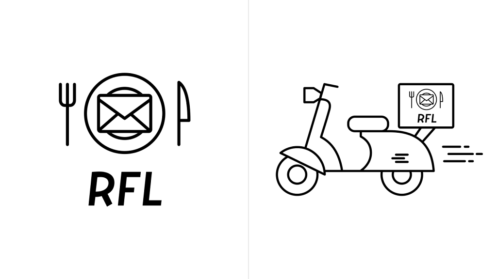
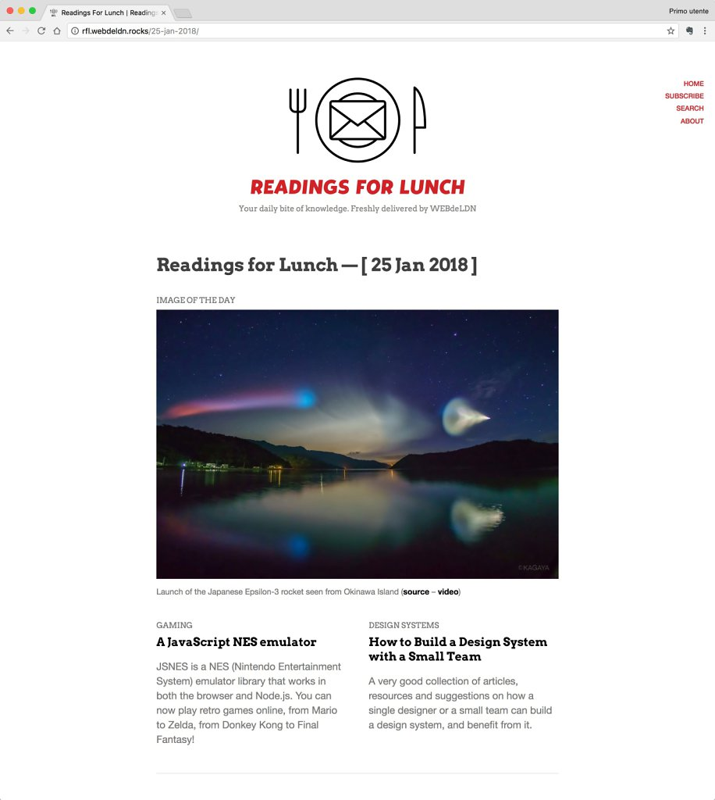
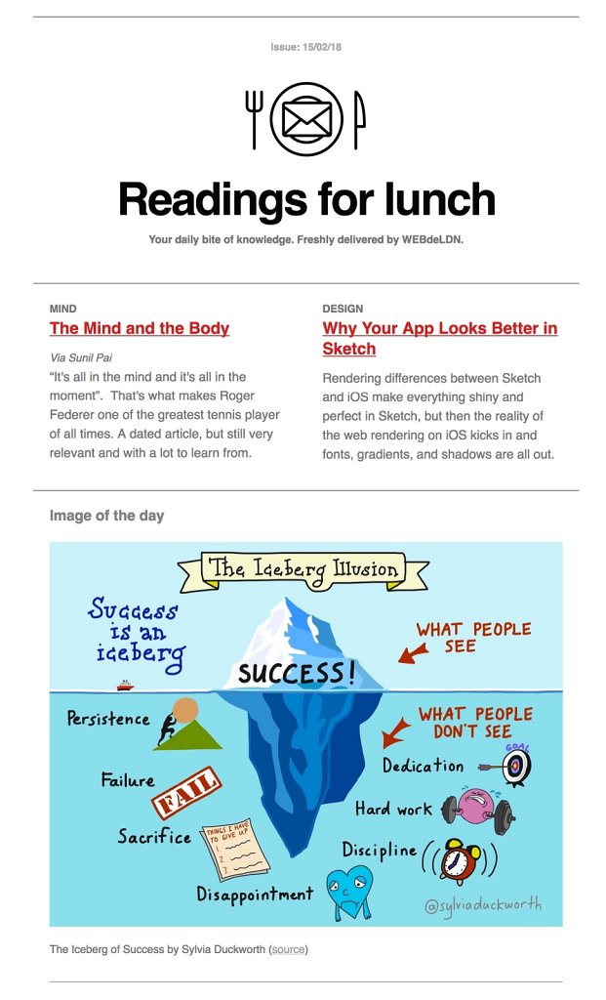

Readings for Lunch
Readings for Lunch is a daily newsletter, a way to share links of things that I have read or seen – interesting, inspiring, moving or simply teaching something new. It’s mostly about sharing knowledge and ideas; but also a bit of fun it doesn’t hurt :)
Website: rfl.webdeldn.rocks/ - Twitter: twitter.com/readings4lunch
-
RFL logo and the "scooter" version

-

-
